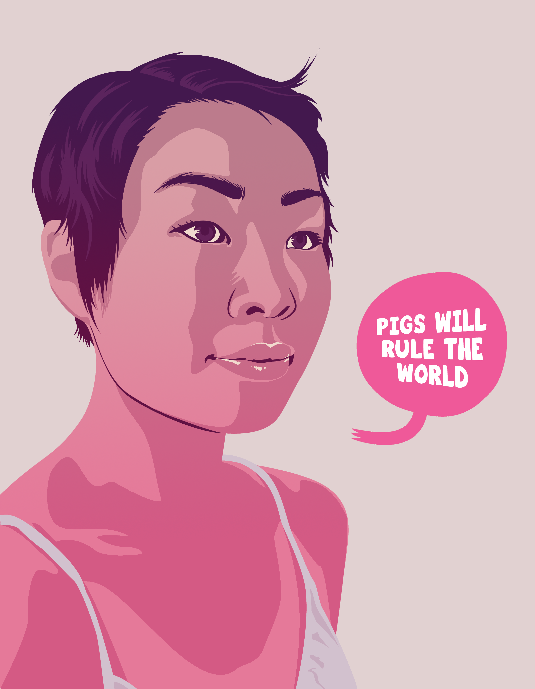

Vector Illustrations
Graphic Design- Illustrator
- Pen tool
Overview
Every once in a while I like to make my friends uncomfortable by making artwork of their faces.

Inspired by Mike Wrobel's freakin' awesome vector illustrations (check out his Game of Thrones art!)

Also inspired by Mike Wrobel's work
Also inspired by Mike Wrobel's work
More Mike Wrobel-inspired work!
Of course I had to try the low-poly portrait craze on my friend's disembodied head...